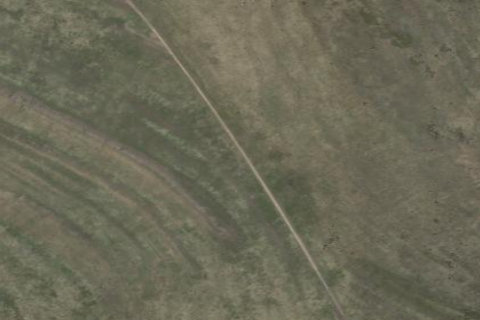

FREMONT ISLAND UPPER
2UT · UT

Aerial imagery source: Esri, Vantor, Earthstar Geographics, and the GIS User Community
View original source (FAA + UBCP) →
| Identifier | 2UT |
|---|---|
| State | UT |
| Runway length | 1,980 ft |
| Runway width | 25 ft |
| Surface | DIRT |
| Runway | 14/32 |
| Elevation | 4,654 ft |
| Ownership | public |
| CTAF | 122.9 |
| Coordinates | 41.15937722, -112.33308 |
Notes
[ubcp] NOTAM: The airstrips at Fremont Island are managed by the UBCP in accordance with a Memorandum of Understanding between the Utah DNR - Sovereign Lands Department and Utah State Aeronautics. Because of the nature of the land, there are a few rules that must be adhered to and pilots are required to review these rules prior to departing for the island: No fires of any kind are permitted No fireworks or explosive items No discharge of firearms or hunting No camping or other overnight use Taking any plant, mineral, wildlife, or any other objects is prohibited No motorized vehicles (except aircraft on designated runways) No items such as geocaches, land art, etc may be placed on the island Any commercial filming or photography require permits through the DNR Furthermore, use of the airstrips atop Fremont Island is open to non-commercial use only. More information about the rules and regulations regarding the airstrips can be found at https://ffsl.utah.gov/state-lands/great-salt-lake/fremont-island/?hilite=Fremont+island . Takeoffs and landings on Fremont Island are restricted to the two established airstrips listed above. Landing or taking off elsewhere on the island is prohibited. Fremont Island is full of history, and we ask that you treat the island just as you would treat a wilderness area, by adhering to the UBCP Code of Conduct . Description: Fremont Island's upper airstrip rests along a ridge that slopes up at both ends, and has downward sloping terrain on both sides of the runway. Runway: 1972 ft long x 10 ft wide dirt runway that was once a four wheel drive trail that is in good condition. Slopes uphill on both ends. First 500' from the south has larger rocks than the rest of the runway. Last few hundred feet beyond stated distance on both ends is somewhat steep. Approach Considerations: Weather station on the south end of the runway on extended centerline. Large rock outcroppings and higher terrain to the north on extended centerline as well. Typically land to the north and depart to the south. Amenities: None. Suggested parking area is either atop the hill to the south along the trail or just prior to the hill off to the west end of the runway. Windsock: Yes, located west of the runway at the north end. Weather: Predominant winds out of the northeast. To view current weather at the island, head to https://viewer.synopticdata.com/map/data/now/air-temperature/FREUT/plots/wind#map=10.34/41.1246/-112.3213 or https://mesowest.utah.edu/cgi-bin/droman/meso_base_dyn.cgi?stn=freut